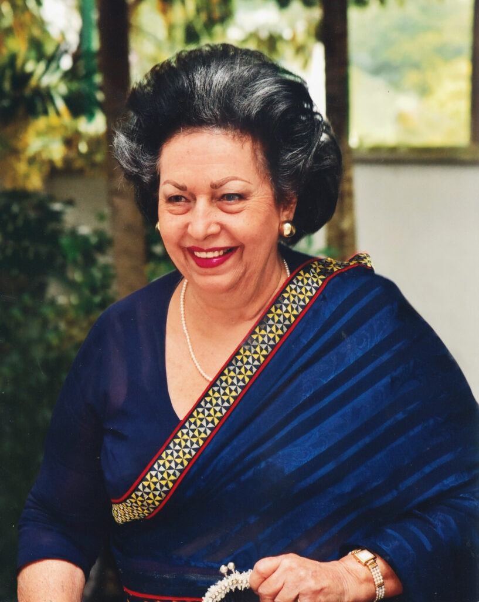

When the idea of building a school was first born in the mind of the illustrious founder of AIS, Mr. W.P. Perera, he realized that as a businessman, a planter and an entrepreneur he would need the best expertise he could get in the field of Education to build and lead his school. Accordingly he invited Mrs. Goolbai Gunasekara to be the first Principal of his new school - Asian International School
Mrs. Gunasekara has an impeccable background in Education thanks to her two well known educationist parents, Dr. Kewal and Mrs.Clara Motwani and her own educational credentials which include an Honours Degree in History, an Honorary Doctorate in English and a host of prizes and awards at various stages of her life
Not many know that Mrs. Gunasekara was an accomplished pianist and gained an LRAM from the Royal Academy of Music while still a teenager. In fact a career in music was thought of but the study of History was her first love. Until a few years ago she regularly played the Piano for her own pleasure and her love for music has been an abiding one.
The professional partnership formed between Mr. Perera and Mrs. Gunasekara was an outstanding success, culminating in AIS becoming one of the most respected International Schools in the island.
The building of the lovely school in which AIS now resides was their dream from the first day that AIS opened its doors in a spacious house next to the British Council. From the beginning, trust played an important role and Mrs. Gunasekara was entrusted with everything relating to the school: the admittance of students, the choice of staff, the syllabuses to be followed, the equipment for laboratories and libraries, the setting up of a strong Sports section – in short everything connected with the school was left in Mrs. Gunasekara's highly capable hands.
Mrs. Goolbai Gunasekara's influence on her pupils has been extremely strong. Many pupils past and present keep in touch with her from all over the world. On her birthdays (a popular time of celebration in school) she has had calls and messages from all over the world. In school her birthdays were a time for students to act skits in which 'GG' (as she was affectionately called) was parodied unmercifully as were many of the Staff. She always enjoyed these occasions and has many very warm memories of the 21 years she headed the school.
Tributes have been paid to her in the press as well as by various organisations. The Zonta Club presented the 'Woman of the Year in Education' award to her – an honour her mother had won earlier. She is often invited to speak at women's gatherings, clubs and book launches – something she does with both poise and élan. Bishop's College (her last school) invited her to give the 6th Oration. She is also often invited to be Chief Guest at School Prize Givings, the last one being at Methodist College, her daughter's old school.
As Chair-person of the Inner Wheel Association of Sri Lanka she was able to extend her interest to social service and Community work. As a result, to this day AIS has a very active and achieving Interact Club.
Explore the minds that have shaped and continue to shape AIS.
Board of Directors Our Principal